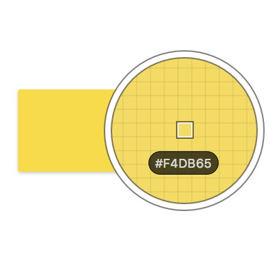
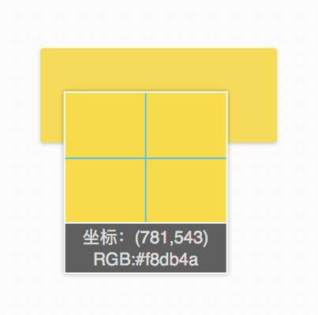
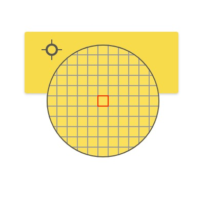
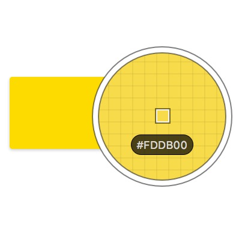
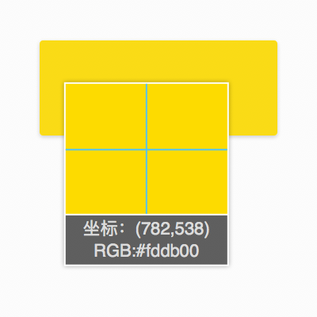
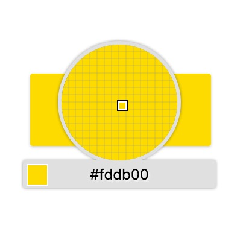
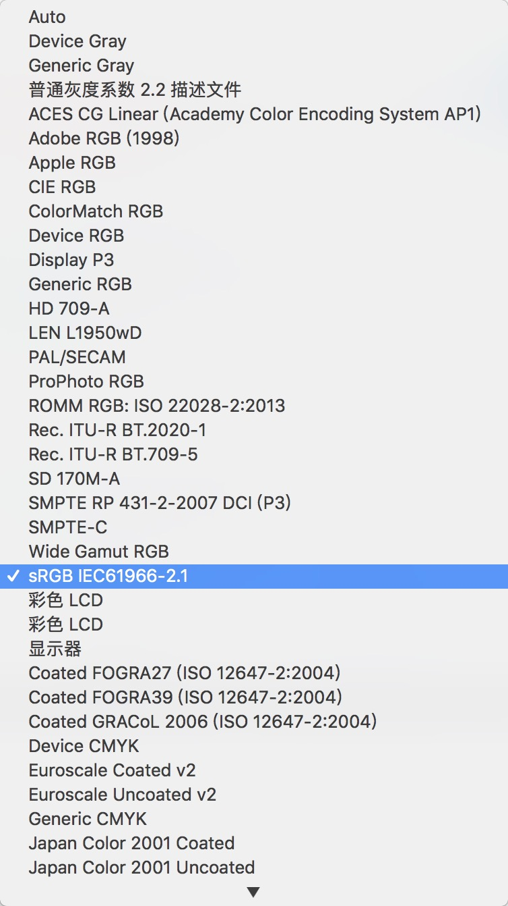

- Closer Yellow
- #FDDB00
- rgb(253, 219, 0)
- hsl(52, 100%, 50%)
色彩管理
事因
设计师特喜欢和程序员怼细节，其中必会抠颜色；然而，明明设置正确的颜色值，取色工具却显示不同的值
咦，颜色值不对？
Sip、QQ截图、浏览器自带取色工具(#FDDB00)

Sip在Chrome中吸取
#F4DB65
QQ截图在Chrome中吸取
#F8DB4A
Chrome自带吸取
#FDDB01
Sip在Firefox中吸取
#FDDB00
QQ截图在Firefox中吸取
#FDDB00
Firefox自带吸取
#FDDB00为何出现这种问题？

Sip的色彩配置文件(icc)
最常用的是：
1) sRGB
2) Adobe RGB (1998)
什么是ICC文件
国际色彩协会（International Color Consortium）制定了一套通过建立设备的色彩特征文件来管理色彩的体系，这种色彩特征文件被称为ICC色彩特征文件，简称ICC文件。
ICC文件描述的是设备在与硬件无关的色彩空间内的色域特性。
通俗的说，当色彩在扫描仪、数字相机、显示器、彩色打印机等计算机外设产品转换过程时，可以透由这个体系，修正各机器在描述相同的颜色时的差异，减少色彩转换时所可能产生的色差或失真。
sRGB && Adobe RGB (1998)
sRGB
sRGB色彩空间是惠普和微软于1997年共同开发的标准色彩空间（standard Red Green Blue），反映普通PC显示器的色彩特征的色彩空间，是一些低端扫描仪，打印机，数码相机和软件的标准预置色彩空间。
但sRGB色域小，甚至CMYK的部分颜色都落在其色域之外，工作在这个空间就意味着一开始就会抛弃某些颜色，包括CMYK打印。因此，sRGB色彩空间更适于处理Web图像, 网上出版和在显示器上作图像、数码相片显示或者是精度要求不高的图片的打印工作。
Adobe RGB (1998)
Adobe RGB色彩空间是由Adobe公司1998年推出的色彩空间标准。本就是为了适合严谨的专业输出和商业印刷的要求制定的标准，所以它拥有宽广的色彩空间和良好的色彩层次表现，与sRGB色彩空间相比，包含了sRGB所没有完全覆盖的CMYK色彩空间。这使得Adobe RGB色彩空间在印刷等领域具有更明显的优势。
也是目前世界上所有彩色数字影象记录设备厂商所公认，目前大多专业数码相机，扫描仪均在其系统中嵌入了Adobe RGB(1998)的标准设置。故可以很容易地在Adobe公司的图像软件之间保持色彩一致。